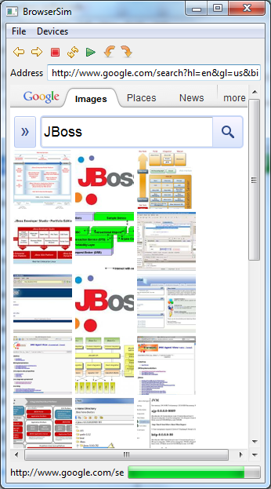
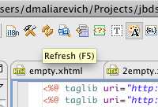

< Main Index CDI/Seam 3 Tools >
BrowserSim |
|
|
New BrowserSim Application
|
BrowserSim is a mobile browser simulator which is integrated into Eclipse as an external web browser. It allows to browse web pages as if they are opened on a mobile device.  |
Editor |
|
|
Hot keys for VPE Refresh.
|
Now there are "F5" and "CTRL+R" shortcuts to perform vusial refresh in Visual Page Editor.  |